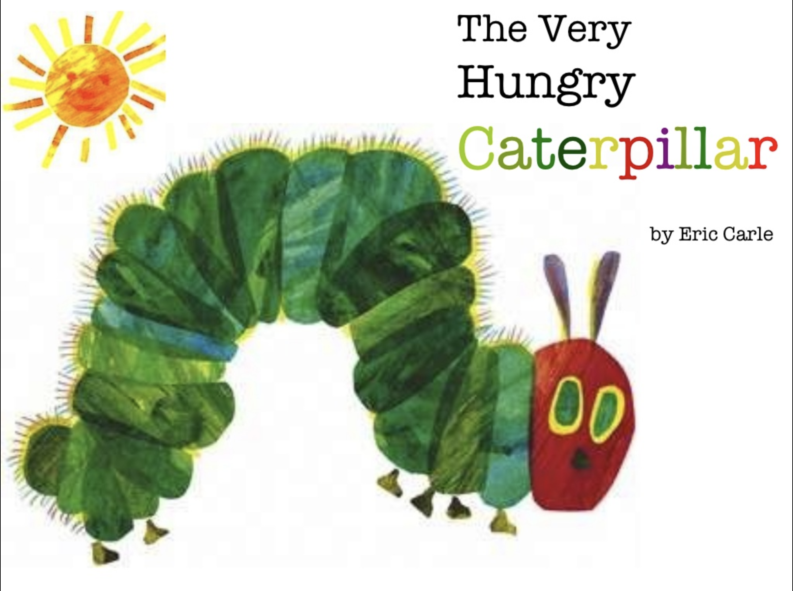
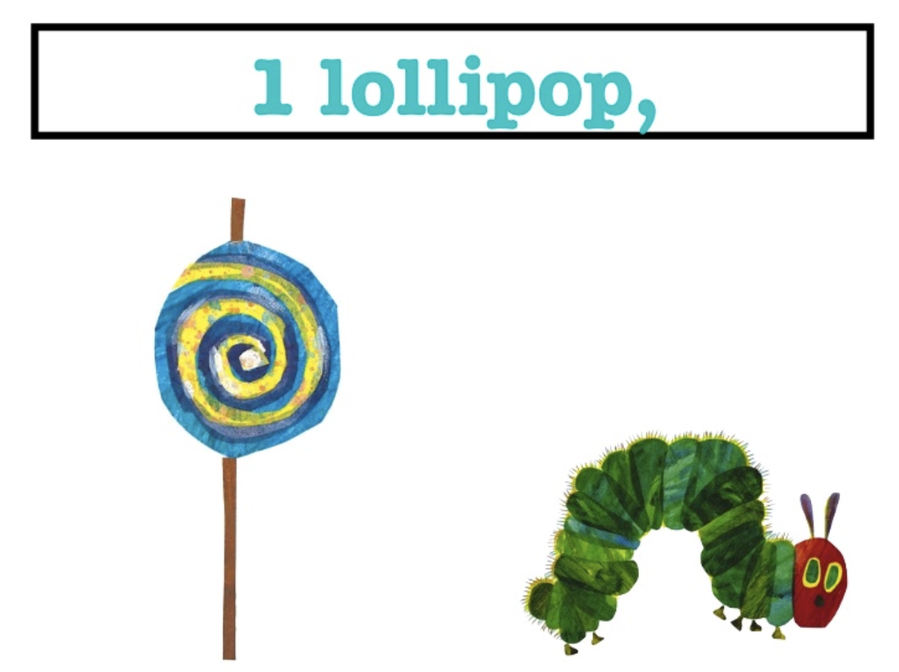
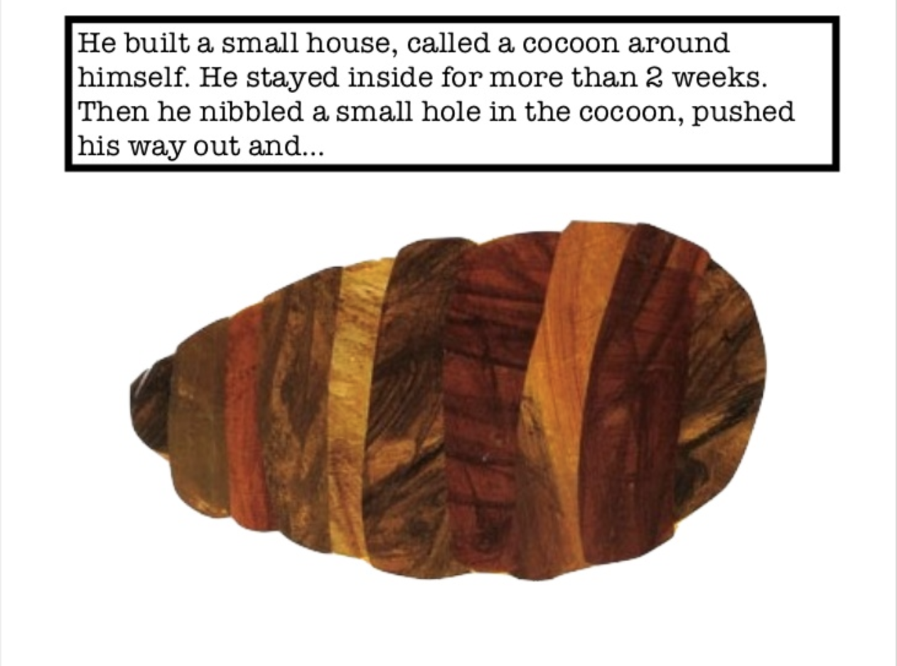

The Very Hungry Caterpillar is a children's picture book designed, illustrated, and written by Eric Carle, first published by the World Publishing Company in 1969, later published by Penguin Putnam.